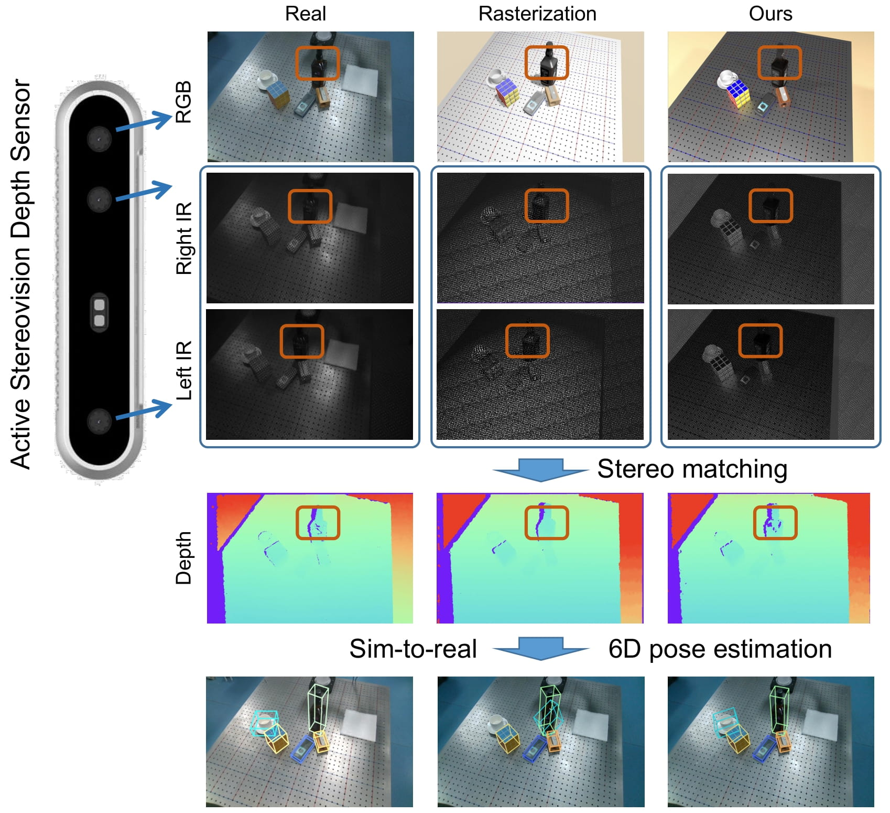
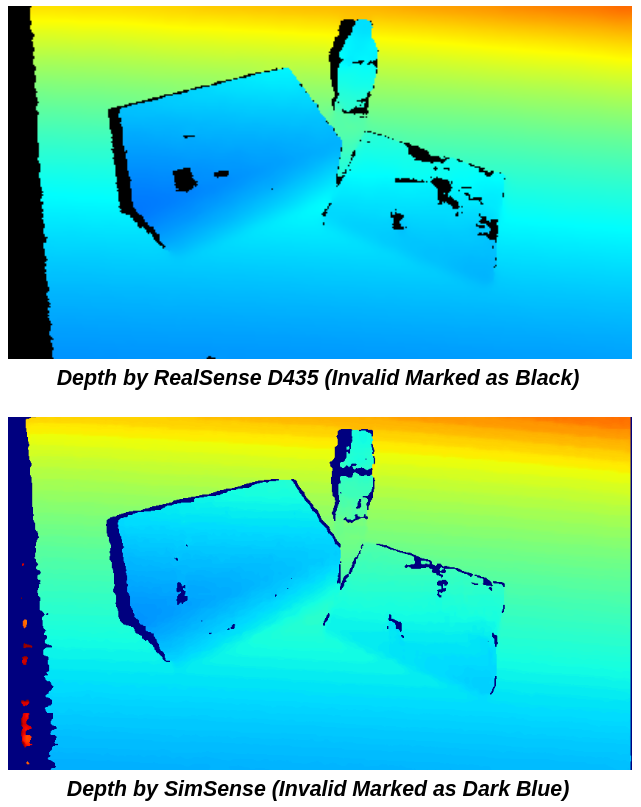
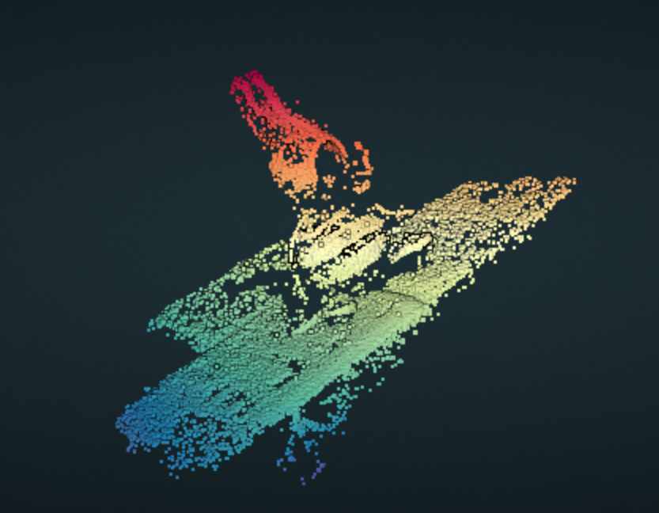

|
Ang Li
I am currently a fourth-year undergraduate student in the Department of Computer Science and Engineering at UC San Diego. I am fortunate to be advised by Prof. Hao Su.
I am broadly interested in computer vision, computer graphics and robotics. In particular, I'm interested in developing visual perception for real-world agents to interact with the environment.
CV /
Email /
GitHub
|
|
|
Research Experience
I've been working with Prof. Hao Su since October 2021. I helped Prof. Su design the final project for the class CSE 152A: Introduction to Computer Vision at UCSD when I was taking it. Starting in 2022, I've been engaging in several computer vision and reinforcement learning researches led by Su Lab. I also took two graduate-level courses CSE 291: Machine Learning for 3D data and CSE 291: Machine Learning for Robotics with Prof. Su. Prior to that, I was conducting research about closed-loop control for mechanical ventilation under the supervision of Prof. Ryan Kastner.
|
|

|
Close the Optical Sensing Domain Gap by Physics-Grounded Active Stereo Sensor Simulation
Xiaoshuai Zhang,
Rui Chen,
Ang Li,
Fanbo Xiang,
Yuzhe Qin,
Jiayuan Gu,
Zhan Ling,
Minghua Liu,
Peiyu Zeng,
Songfang Han,
Zhiao Huang,
Tongzhou Mu,
Jing Xu,
Hao Su
T-RO (accepted, in final revision), 2022
project page
/
arXiv
We lower the sim-to-real gap of simulated depth and real active stereovision depth sensors, by designing a fully physics-grounded pipeline. Perception and RL methods trained in simulation can transfer well to the real world without any fine-tuning. It can also estimate the algorithm performance in the real world, largely reducing human effort of algorithm evaluation.
|
|

|
SimSense: A Real-Time Depth Sensor Simulator
Sep 2022
GitHub
SimSense is a GPU-accelerated depth sensor simulator for python, implemented with CUDA. Based on semi-global matching, SimSense encapsulated all necessary algorithms to compute depth from a pair of stereo images. It can achieve over 250 FPS whereas usual CPU implementations can hardly achieve 1 fps. This library has been integrated into the open-source simulation environment SAPIEN.
|
|
|
NeRF on Bottles
March 2022
GitHub
This is the final project for my course CSE 291: Machine Learning for 3D Geometry at UCSD, in which I reproduced Neural Radiance Fields on the bottles dataset.
|
|

|
Simple MVS
Dec 2021
GitHub
A Multi-Vew Stereo reconstruction pipeline implemented with OpenCV and Open3D. I designed this pipeline to be used as the final assignment for the class CSE 152A: Introduction to Computer Vision of Fall 2021.
|
|
Teaching
Instructional Assistant for CSE 152A: Introduction to Computer Vision of 2022 Fall at UCSD. Instructor: Manmohan Chandraker
|
|
{kind=link}